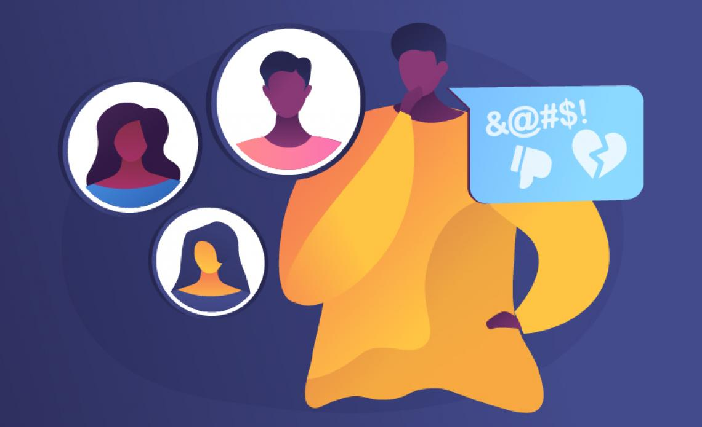
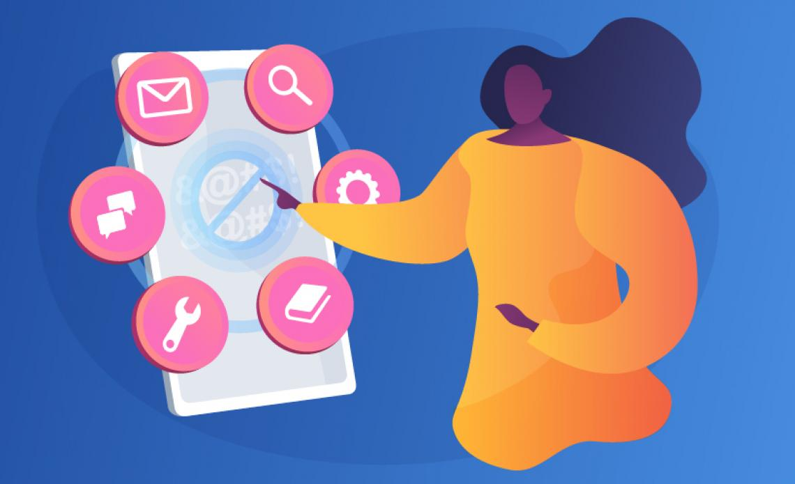
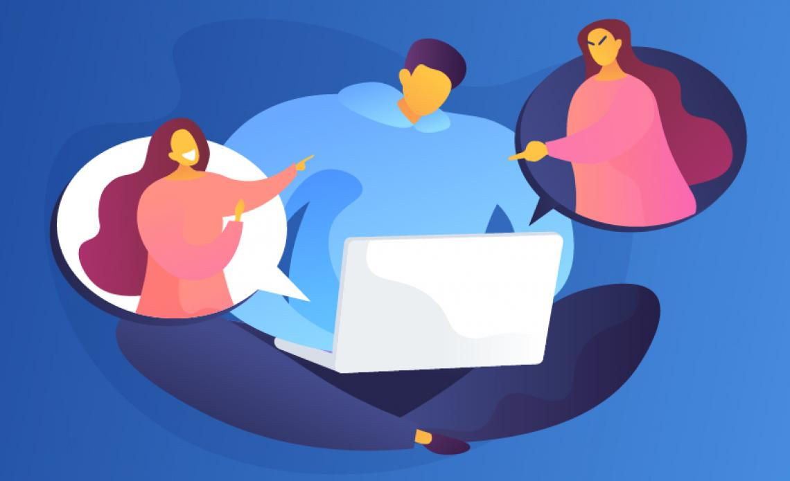

★ What Is Cyberbullying ? : ‐
Cyberbullying is bullying with the use of digital technologies. It can take place on social media, messaging platforms, gaming platforms and mobile phones. It is repeated behaviour, aimed at scaring, angering or shaming those who are targeted. Examples
include:
* spreading lies about or posting embarrassing photos of someone on social media.
* sending hurtful messages or threats via messaging platforms.
* impersonating someone and sending mean messages to others on their behalf.
Face-to-face bullying and cyberbullying can often happen alongside each other. But cyberbullying leaves a digital footprint – a record that can prove useful and provide evidence to help stop the abuse.
1) Am I being bullied online ? How do you tell the difference between a joke and bullying ? : ‐
UNICEF Says :
All friends joke around with each other, but sometimes it’s hard to tell if someone is just having fun or trying to hurt you, especially online. Sometimes they’ll laugh it off with a “just kidding,” or “don’t take it so seriously.”
All friends joke around with each other, but sometimes it’s hard to tell if someone is just having fun or trying to hurt you, especially online. Sometimes they’ll laugh it off with a “just kidding,” or “don’t take it so seriously.”
But if you feel hurt or think others are laughing at you instead of with you, then the joke has gone too far. If it continues even after you’ve asked the person to stop and you are still feeling upset about it, then this could be bullying.
And when the bullying takes place online, it can result in unwanted attention from a wide range of people including strangers. Wherever it may happen, if you are not happy about it, you should not have to stand for it.
Call it what you will – if you feel bad and it doesn’t stop, then it’s worth getting help. Stopping cyberbullying is not just about calling out bullies, it’s also about recognizing that everyone deserves respect – online and in real life.
2) What are the effects of cyberbullying ? : ‐
When bullying happens online it can feel as if you’re being attacked everywhere, even inside your own home. It can seem like there’s no escape. The effects can last a long time and affect a person in many ways:
The feeling of being laughed at or harassed by others, can prevent people from speaking up or trying to deal with the problem. In extreme cases, cyberbullying can even lead to people taking their own lives.
Cyberbullying can affect us in many ways. But these can be overcome and people can regain their confidence and health.
• Mentally — feeling upset, embarrassed, stupid, even angry
• Emotionally — feeling ashamed or losing interest in the things you love
• Physically — tired (loss of sleep), or experiencing symptoms like stomach aches and headaches
The feeling of being laughed at or harassed by others, can prevent people from speaking up or trying to deal with the problem. In extreme cases, cyberbullying can even lead to people taking their own lives.
Cyberbullying can affect us in many ways. But these can be overcome and people can regain their confidence and health.
3) Who should I talk to if someone is bullying me online ? Why is reporting important ? : ‐
If you think you’re being bullied, the first step is to seek help from someone you trust such as your parents, a close family member or another trusted adult.
In your school you can reach out to a counsellor, the sports coach or your favourite teacher.
And if you are not comfortable talking to someone you know, search for a helpline in your country to talk to a professional counsellor.
If the bullying is happening on a social platform, consider blocking the bully and formally reporting their behaviour on the platform itself. Social media companies are obligated to keep their users safe.
It can be helpful to collect evidence – text messages and screen shots of social media posts – to show what’s been going on.
For bullying to stop, it needs to be identified and reporting it is key. It can also help to show the bully that their behaviour is unacceptable.
If you are in immediate danger, then you should contact the police or emergency services in your country.
In your school you can reach out to a counsellor, the sports coach or your favourite teacher.
And if you are not comfortable talking to someone you know, search for a helpline in your country to talk to a professional counsellor.
If the bullying is happening on a social platform, consider blocking the bully and formally reporting their behaviour on the platform itself. Social media companies are obligated to keep their users safe.
It can be helpful to collect evidence – text messages and screen shots of social media posts – to show what’s been going on.
For bullying to stop, it needs to be identified and reporting it is key. It can also help to show the bully that their behaviour is unacceptable.
If you are in immediate danger, then you should contact the police or emergency services in your country.

4) I’m experiencing cyberbullying, but I’m afraid to talk to my parents about it. How can I approach them ? : ‐
If you are experiencing cyberbullying, speaking to a trusted adult – someone you feel safe talking to – is one of the most important first steps you can take.
Talking to parents isn’t easy for everyone. But there are things you can do to help the conversation. Choose a time to talk when you know you have their full attention. Explain how serious the problem is for you. Remember, they might not be as familiar with technology as you are, so you might need to help them to understand what’s happening.
They might not have instant answers for you, but they are likely to want to help and together you can find a solution. Two heads are always better than one! If you are still unsure about what to do, consider reaching out to other trusted people. There are often more people who care about you and are willing to help than you might think!
Talking to parents isn’t easy for everyone. But there are things you can do to help the conversation. Choose a time to talk when you know you have their full attention. Explain how serious the problem is for you. Remember, they might not be as familiar with technology as you are, so you might need to help them to understand what’s happening.
They might not have instant answers for you, but they are likely to want to help and together you can find a solution. Two heads are always better than one! If you are still unsure about what to do, consider reaching out to other trusted people. There are often more people who care about you and are willing to help than you might think!
5) How can I help my friends report a case of cyberbullying especially if they don’t want to do it ? : ‐
Anyone can become a victim of cyberbullying. If you see this happening to someone you know, try to offer support.
It is important to listen to your friend. Why don’t they want to report being cyberbullied? How are they feeling? Let them know that they don’t have to formally report anything, but it’s crucial to talk to someone who might be able to help.
Remember, your friend may be feeling fragile. Be kind to them. Help them think through what they might say and to whom. Offer to go with them if they decide to report. Most importantly, remind them that you’re there for them and you want to help.
If your friend still does not want to report the incident, then support them in finding a trusted adult who can help them deal with the situation. Remember that in certain situations the consequences of cyberbullying can be life threatening.
Doing nothing can leave the person feeling that everyone is against them or that nobody cares. Your words can make a difference.
It is important to listen to your friend. Why don’t they want to report being cyberbullied? How are they feeling? Let them know that they don’t have to formally report anything, but it’s crucial to talk to someone who might be able to help.
Remember, your friend may be feeling fragile. Be kind to them. Help them think through what they might say and to whom. Offer to go with them if they decide to report. Most importantly, remind them that you’re there for them and you want to help.
If your friend still does not want to report the incident, then support them in finding a trusted adult who can help them deal with the situation. Remember that in certain situations the consequences of cyberbullying can be life threatening.
Doing nothing can leave the person feeling that everyone is against them or that nobody cares. Your words can make a difference.
6) How do we stop cyberbullying without giving up access to the Internet ? : ‐
Being online has so many benefits. However, like many things in life, it comes with risks that you need to protect against.
If you experience cyberbullying, you may want to delete certain apps or stay offline for a while to give yourself time to recover. But getting off the Internet is not a long-term solution. You did nothing wrong, so why should you be disadvantaged? It may even send the bullies the wrong signal — encouraging their unacceptable behaviour.
We all want cyberbullying to stop, which is one of the reasons reporting cyberbullying is so important. But creating the Internet we want goes beyond calling out bullying. We need to be thoughtful about what we share or say that may hurt others. We need to be kind to one another online and in real life. It's up to all of us!
If you experience cyberbullying, you may want to delete certain apps or stay offline for a while to give yourself time to recover. But getting off the Internet is not a long-term solution. You did nothing wrong, so why should you be disadvantaged? It may even send the bullies the wrong signal — encouraging their unacceptable behaviour.
We all want cyberbullying to stop, which is one of the reasons reporting cyberbullying is so important. But creating the Internet we want goes beyond calling out bullying. We need to be thoughtful about what we share or say that may hurt others. We need to be kind to one another online and in real life. It's up to all of us!
7) How do I prevent my personal information from being used to manipulate or humiliate me on social media ? : ‐
Think twice before posting or sharing anything online – it may stay online forever and could be used to harm you later. Don’t give out personal details such as your address, telephone number or the name of your school.
Learn about the privacy settings of your favourite social media apps. Here are some actions you can take on many of them:
On most of your favourite social media, people aren 't notified when you block, restrict or report them.
Learn about the privacy settings of your favourite social media apps. Here are some actions you can take on many of them:
•You can decide who can see your profile, send you direct messages or comment on your posts by adjusting your account privacy settings.
• You can report hurtful comments, messages and photos and request they be removed.
• Besides ‘unfriending’, you can completely block people to stop them from seeing your profile or contacting you.
• You can also choose to have comments by certain people to appear only to them without completely blocking them.
• You can delete posts on your profile or hide them from specific people.
• You can report hurtful comments, messages and photos and request they be removed.
• Besides ‘unfriending’, you can completely block people to stop them from seeing your profile or contacting you.
• You can also choose to have comments by certain people to appear only to them without completely blocking them.
• You can delete posts on your profile or hide them from specific people.
On most of your favourite social media, people aren 't notified when you block, restrict or report them.
8) Is there a punishment for cyberbullying ? : ‐
Most schools take bullying seriously and will take action against it. If you are being cyberbullied by other students, report it to your school.
People who are victims of any form of violence, including bullying and cyberbullying, have a right to justice and to have the offender held accountable.
Laws against bullying, particularly on cyberbullying, are relatively new and still do not exist everywhere. This is why many countries rely on other relevant laws, such as ones against harassment, to punish cyberbullies.
In countries that have specific laws on cyberbullying, online behaviour that deliberately causes serious emotional distress is seen as criminal activity. In some of these countries, victims of cyberbullying can seek protection, prohibit communication from a specified person and restrict the use of electronic devices used by that person for cyberbullying, temporarily or permanently.
However, it is important to remember that punishment is not always the most effective way to change the behaviour of bullies. It is often better to focus on repairing the harm and mending the relationship.
People who are victims of any form of violence, including bullying and cyberbullying, have a right to justice and to have the offender held accountable.
Laws against bullying, particularly on cyberbullying, are relatively new and still do not exist everywhere. This is why many countries rely on other relevant laws, such as ones against harassment, to punish cyberbullies.
In countries that have specific laws on cyberbullying, online behaviour that deliberately causes serious emotional distress is seen as criminal activity. In some of these countries, victims of cyberbullying can seek protection, prohibit communication from a specified person and restrict the use of electronic devices used by that person for cyberbullying, temporarily or permanently.
However, it is important to remember that punishment is not always the most effective way to change the behaviour of bullies. It is often better to focus on repairing the harm and mending the relationship.

9) Internet companies don’t seem to care about online bullying and harassment. Are they being held responsible ? : ‐
Internet companies are increasingly paying attention to the issue of online bullying.
Many of them are introducing ways to address it and better protect their users with new tools, guidance and ways to report online abuse.
But it is true that even more is needed. Many young people experience cyberbullying every day. Some face extreme forms of online abuse. Some have taken their own lives as a result.
Technology companies have a responsibility to protect their users especially children and young people.
It is up to all of us to hold them accountable when they’re not living up to these responsibilities.
Many of them are introducing ways to address it and better protect their users with new tools, guidance and ways to report online abuse.
But it is true that even more is needed. Many young people experience cyberbullying every day. Some face extreme forms of online abuse. Some have taken their own lives as a result.
Technology companies have a responsibility to protect their users especially children and young people.
It is up to all of us to hold them accountable when they’re not living up to these responsibilities.
10)Are there any online anti-bullying tools for children or young people ? : ‐
Each social platform offers different tools that allow you to restrict who can comment on or view your posts or who can connect automatically as a friend, and to report cases of bullying. Many of them involve simple steps to block, mute or report cyberbullying.
We encourage you to explore them.
Social media companies also provide educational tools and guidance for children, parents and teachers to learn about risks and ways to stay safe online.
Also, the first line of defense against cyberbullying could be you. Think about where cyberbullying happens in your community and ways you can help – by raising your voice, calling out bullies, reaching out to trusted adults or by creating awareness of the issue. Even a simple act of kindness can go a long way.
If you are worried about your safety or something that has happened to you online, urgently speak to an adult you trust. Many countries have a special helpline you can call for free and talk to someone anonymously.
Social media companies also provide educational tools and guidance for children, parents and teachers to learn about risks and ways to stay safe online.
Also, the first line of defense against cyberbullying could be you. Think about where cyberbullying happens in your community and ways you can help – by raising your voice, calling out bullies, reaching out to trusted adults or by creating awareness of the issue. Even a simple act of kindness can go a long way.
If you are worried about your safety or something that has happened to you online, urgently speak to an adult you trust. Many countries have a special helpline you can call for free and talk to someone anonymously.

Thank You !!!